🗺️ 동선 한눈에
푸동공항 → 2호선 → 世纪大道 환승 → 6호선 → 上海儿童医学中心 → (도보) 런지약국·런지병원 12:15 → (택시 21분) → 人民广场 第一医药 凤阳路店 → (택시 19분) → 파크웨이 구베이 클리닉 15:00 → (택시 50분) → 공항
- 08:25 푸동 T2 도착 · 짐 없음(위탁 0kg) → 입국심사
- 지하철 2号线 蟠祥路·国家会计学院 방향(예전 徐泾东) → 世纪大道역 환승 → 6号线 东方体育中心 방향 → 上海儿童医学中心역 하차 (3번 출구)
- 푸동공항 출발 열차는 전부 蟠祥路·国家会计学院 종점 — 중간에 갈아타지 않습니다
- 👉 바로 아래 🚇 사진 가이드에 표지판·열차 색·출구까지 순서대로 있습니다
08:25 착륙 → 10:10 上海儿童医学中心역. 사진 순서대로만 따라오면 됩니다. 입국심사 포함 약 1시간 45분.
- 입국심사 통과하고 짐 찾는 곳을 지나 1층 도착층으로 나옵니다(위탁 0kg면 바로).
- 천장의 남색(진남색) 긴 표지판에서 초록 사각 배지 안 地铁 Metro를 찾으세요. 같은 표지판 줄에 磁浮 Maglev(자기부상)·长途汽车站도 같이 붙어 있으니 地铁만 고르면 됩니다.
- 지하철·자기부상 모두 T1·T2 사이 중앙 교통센터에 있습니다. T2에서 중앙 통로까지 약 150m(무빙워크) · 도보 5분. 2호선 站厅은 통로 남쪽(오른쪽), 자기부상(磁浮)은 반대쪽입니다. 우리는 地铁 2号线.
- 站厅 입구 개찰구(闸机)에서 알리페이 出行 → 上海地铁乘车码 QR을 스캔해 통과. QR이 안 되면 옆 발권기에서 1회권(도착역 上海儿童医学中心 선택).
이 표지판을 찾으세요남색 패널 · 초록 사각 배지 · 흰 글씨 地铁 Metro가 상하이 지하철 표지판의 기본형입니다. 화살표 방향은 통로마다 다르니 地铁 쪽 화살표만 따라가면 됩니다. 옆의 磁浮는 龙阳路로 가는 다른 열차 — 타지 마세요.
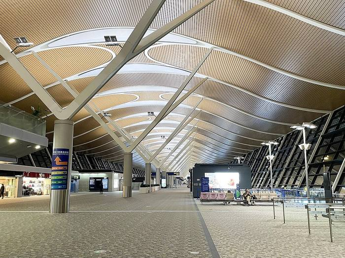
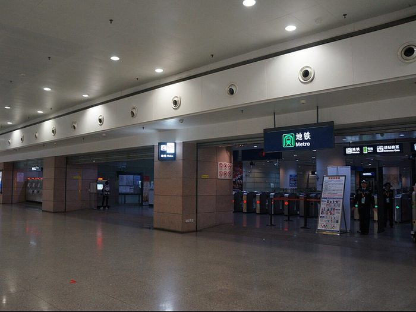
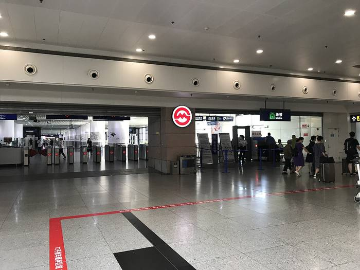
- 승강장 표지는 2号线 Line 2 + 연두색(초록) 띠. 행선지는 蟠祥路·国家会计学院 — 예전 徐泾东가 国家会展中心으로 바뀌고 서쪽 종점이 더 늘어난 이름입니다. 헷갈리면 "2号线"만 보세요.
- 이 역이 2호선 동쪽 시종착이라 방향을 고를 필요가 없습니다 — 들어오는 2호선 아무거나 타면 世纪大道로 갑니다.
- 이 역 승강장은 내리는 쪽 / 타는 쪽 두 개로 나뉘어 있습니다. 계단 위 안내(乘车·上客)를 따라 타는 쪽으로 가세요.
- 14번째 역이 世纪大道(Century Avenue · 스지다다오). 차내 노선도·방송으로 확인. 약 49분.
- 4량 편성은 2019-10-23 폐지 — 지금은 전 시간 8량입니다. 평일 아침 첨두에는 广兰路 종점(小交路) 열차가 시내 방향에 섞이지만, 푸동공항에서 타는 열차는 전부 蟠祥路 종점이라 갈아탈 일이 없습니다.
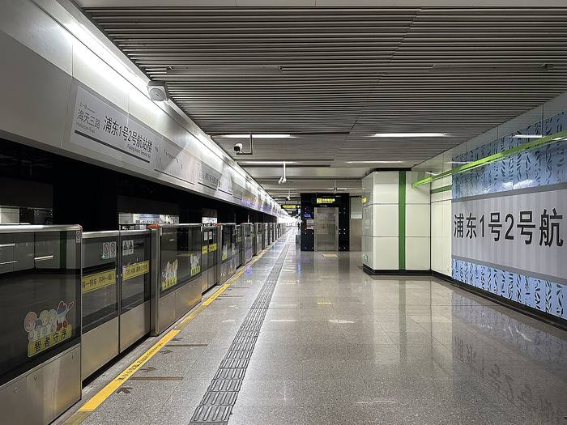
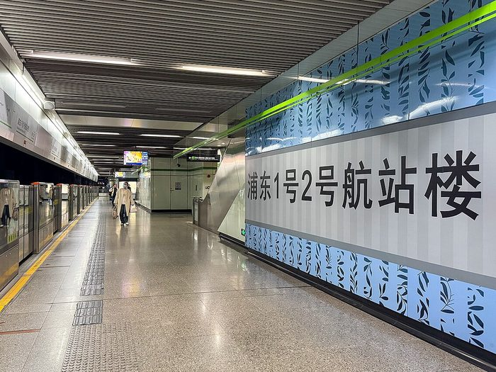
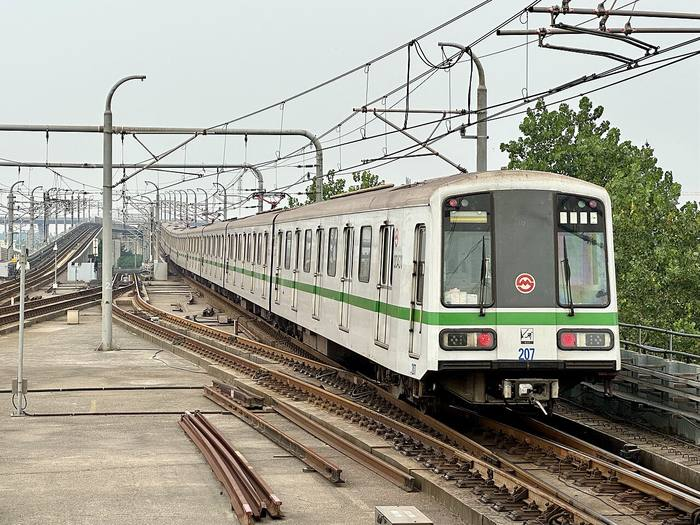
- 내리면 개찰구 밖으로 나가지 말고 안쪽에서 6号线 Line 6 표지를 따라 이동합니다.
- 世纪大道는 2·4·6·9호선이 만나는 큰 역 — 표지판 색으로 구분합니다. 2호선 연두 / 4호선 진보라 / 6호선 자주(마젠타) / 9호선 하늘색.
- 환승 통로에 붙은 대형 안내판이 핵심입니다(사진 ⑦). 东方体育中心 방향 = A厅(→), 港城路 방향 = B厅(←). 우리는 东方体育中心 쪽 화살표만 따라가면 됩니다.
- 초록 천장이 2호선 站厅입니다(사진 ⑧). 여기서 6号线 표지를 따라 계단·에스컬레이터로 내려가세요.
- 6호선 승강장에서 东方体育中心(Oriental Sports Center) 방면 탑승. 港城路 방면은 정반대이니 타기 전에 행선지 표시를 꼭 확인하세요.
행선지 이름으로 고르세요6호선 표지판은 검은 바탕에 자주색 6 배지입니다. 东方体育中心이 적힌 쪽으로만 가고, 港城路가 적힌 쪽은 반대입니다. 역 안내판에는 A厅·B厅으로도 적혀 있습니다(사진 ⑦).
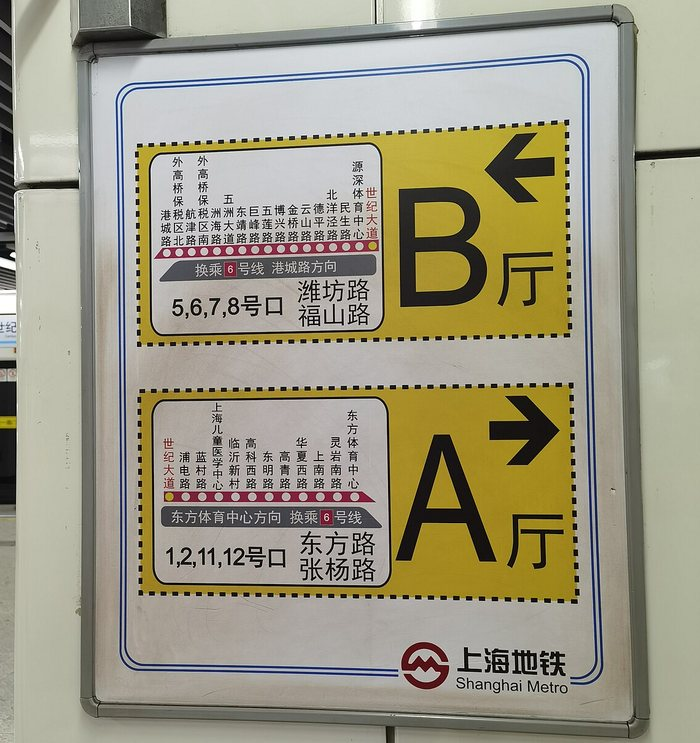
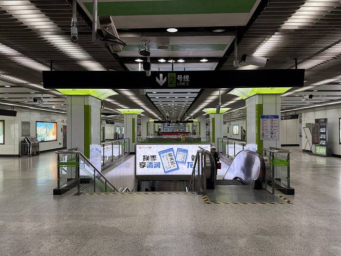
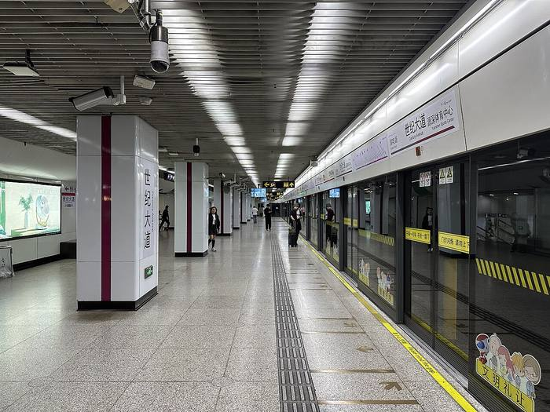
- 정확히 3정거장. 浦电路·蓝村路(4호선 환승역)는 그냥 지나갑니다.
- 방송·표시: 上海儿童医学中心 / Shanghai Children's Medical Center.
- 내리면 벽이 주황색 — 주황이면 맞게 왔습니다.
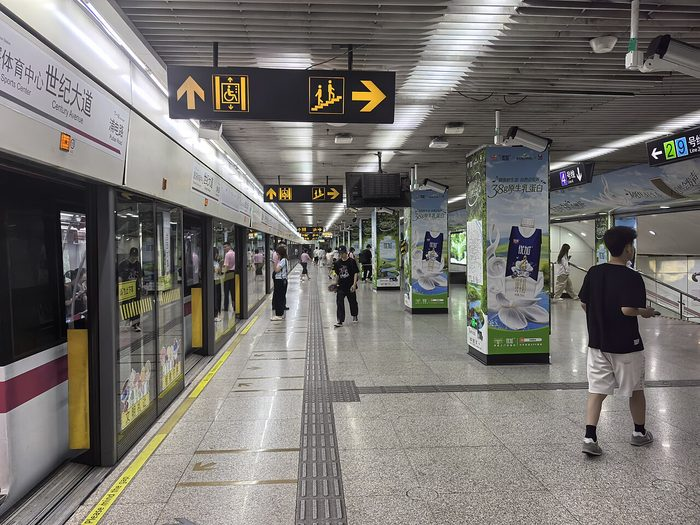
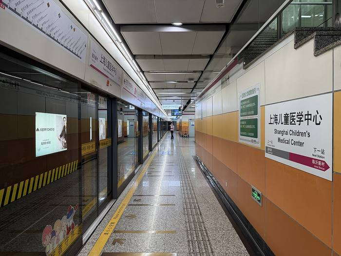
- 개찰구 나와 3号口(3번 출구). 노란 번호판과 出口 Exit 표지를 따라 지상으로. 1번 출구도 같은 블록이지만 3번 출구 표지에 上海儿童医学中心·北园路가 함께 붙어 있습니다.
- 출구 지붕에 6号线 上海儿童医学中心站 3号口 표지(사진 ⑫). 나오면 동쪽 큰길이 东方路, 출구 바로 북쪽이 北园路입니다.
- 출구 앞은 보도블록 광장 — 자전거·전동스쿠터가 빠르게 지나갑니다. 한 번 멈춰 서서 지도를 확인하세요.
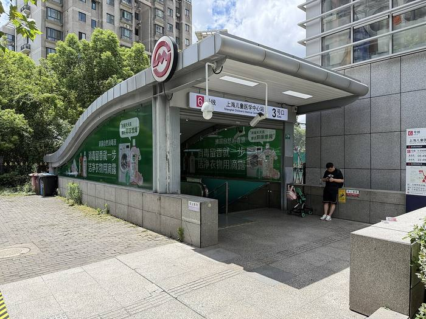
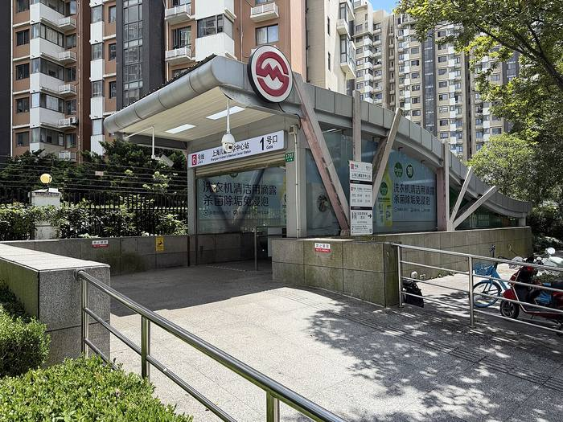
🚶 출구에서 갈림길 — 약국과 병원은 반대쪽입니다
- 런지약국 동원점 东方路1621号 — 3号口에서 东方路를 따라 북쪽(浦建路 방향)으로 약 450m · 도보 6분. 길 동편, 仁济医院 담장 맞은편. ☎ 021-5089-7060
- 런지병원 동원 국제의료부 北园路33号 — 반대로 北园路를 따라 서쪽으로 약 250m · 도보 4분. 담장을 따라가면 北园路33号 정문.
- 정문 안으로 들어가 15号楼(健康管理中心) 1층. 경비에게 "国际医疗部, 15号楼"를 보여 주세요. 1층 접수(特约门诊)에서 여권을 내면 끝.
- 주의 — 浦建路160号는 일반외래 정문입니다. 국제의료부와 캠퍼스 반대쪽이니 그리로 들어가면 한 바퀴 돌아야 합니다.
사진 출처: Wikimedia Commons (CC BY-SA 4.0 · CC BY 4.0) — 촬영자 Windmemories · MNXANL · Kmchang28 · A Chinese ID · 4084470 0.smil. 각 사진 아래에 촬영자·라이선스를 표기했습니다. 표지판·열차 도색은 촬영 시점 기준이며 현장에서 바뀔 수 있습니다. 이 페이지의 표지판 카드와 약도는 실제 표지판 색·한자·화살표를 보고 그린 도해(SVG)이며 사진이 아닙니다.
- 런지약국 동원점 东方路1621号 — 3号口에서 도보 450m·6분(东方路 북쪽) · ☎ 021-5089-7060
- 💊 약국 1번 카드를 그대로 보여 주세요 — 여권 + 병원 처방전(纸质处方)
- 같은 블록 2순위 国大龙威大药房 浦建路111号 — 런지약국에서 도보 9분·0.6km(런지 국제의료부에서는 도보 6분). 여권 구매 가능 여부·재고를 물어보세요.
- 안 되면 국대약방 린이루점 临沂路359号 — 걸어갈 거리가 아닙니다(아래)
🚕 2순위 국대약방 린이루점 — 도보권 아님
- 먼저 전화 ☎ 021-5089-7060 런지약국에 5mg 재고를 확인하고, 없을 때만 움직이세요.
- 临沂路359号는 上海儿童医学中心역에서 남서쪽 약 2.2km. 걸으면 35분 — 걸어갈 곳이 아닙니다.
- 택시 런지약국 출발 약 4.8km · 10분, 돌아올 때 병원 北园路33号까지 2.0km · 7분 (디디 목적지 国大药房 临沂路359号)
- 지하철 6号线 1정거장 临沂新村역 + 도보 900m·13분 — 지하철로는 왕복 40분+
- 10:30까지 출발하지 못하면 건너뛰고 12:15 런지부터. 1펜은 병원에서 받습니다.
- 일반외래 浦建路160号 아닙니다 → 국제의료부 北园路33号 (건강관리센터 1층)
- 여권 원본 + 진찰료 508위안(알리페이)
- 받을 것: 5mg 1펜 · 종이 처방전 纸质处方 · 병원 직인 公章 · 정식 영수증 发票 · 아이스팩
- 13:15 택시 출발 → 펑양루점(21분·13.0km). 파크웨이 15:00 예약 때문에 늦어지면 약국을 건너뛰고 바로 구베이로 가세요.
- 1순위 第一医药 凤阳路店 凤阳路274号 1층(底层) — 런지 北园路33号에서 택시 약 21분(13.0km) · 지하철이면 6→2号线 人民广场역 9번 출구
- 영업 08:30~20:30(지도 표기) · ☎ 021-6312-8993 — 늦어질 것 같으면 먼저 전화
- 여권으로 현장 온라인 처방 구매까지 된 지점 — 오후 약국은 여기부터
- 2순위 第一医药商店 본점 南京东路616号 — 도보 900m·13~15분. 시간이 없으면 생략 — 15:00 파크웨이 예약이 먼저입니다.
🚶 人民广场역 → 凤阳路274号 — 9번 출구가 정답
- 2号线 승강장에서 8·9·10·11번 출구 표지를 따라 南京西路 쪽으로 나옵니다. 우리는 9번 출구.
- 9번 출구 — 南京西路·黄河路 모서리, 国际饭店(Park Hotel) 맞은편. 여기서 黄河路를 따라 북쪽 50m.
- 凤阳路 사거리에서 왼쪽(서쪽) 30m — 오른쪽(북측) 건물 1층이 第一医药. 합계 약 170m · 도보 2~3분.
- 8번 출구로 나와도 됩니다 — 南京西路 남측·永新广场 맞은편에서 200m · 3~4분(한 블록 더).
- 9번이 가장 짧습니다 — 8번은 같은 방향 한 블록 동쪽, 10·11번은 黄河路 건너편(서쪽)입니다.
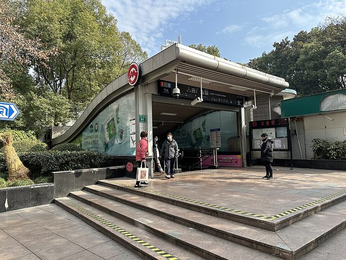
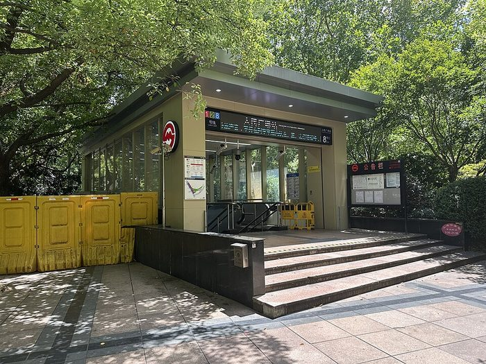
🚶 凤阳路 → 南京东路616号 (시간이 남으면)
- 걸어서 凤阳路→南京西路→南京东路步行街 900m · 13~15분. 쇼핑 거리라 걷기 좋습니다.
- 2호선으로 人民广场역 1정거장 → 南京东路역. 역에서 본점까지 도보 350~550m.
- 출구 선택 — 南京东路역 1·4번 출구(山西南路)가 본점에서 350m·6분으로 가장 가깝습니다. 2·3번 출구(河南中路)로 나오면 550m·8분 되돌아 걷습니다.
- 본점은 世纪广场 옆·浙江中路 동쪽 — 큰 약국 간판이 보입니다. ☎ 021-6350-6610
- 14:15 구베이행 출발 — 본점(南京东路616号) 앞은 보행자 거리라 택시가 못 들어옵니다. 山西南路·九江路 쪽 큰길로 나와 디디 호출(승차점 지정). 파크웨이까지 22분 · 10.5km.
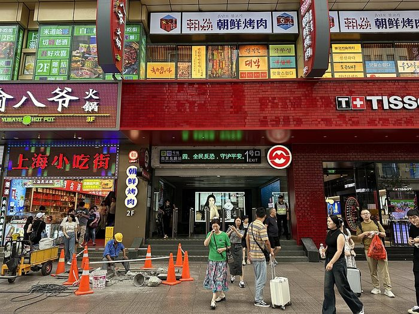
- 百汇医疗 古北门诊部 (ParkwayHealth Gubei) 黄金城道776号 2층 — 창닝구 古北(구베이), 홍차오공항 쪽 한인·외국인 밀집 지역입니다.
- 예약 요청 11/26(목) 15:00 · 가정의학과 김현익 선생님 — 한국어 진료(한국부 회신 대기). 초진 정보(HONG TEAK LIM · 1982-04-05 · +82 10-9925-7979)는 메일로 전달 완료 · 여권 원본 지참.
- 한국 처방전 + 진료기록을 보여 주면 5mg(20mg/펜) 최대 3펜 일괄 처방. 진료비 500위안(한국인 할인) + 펜당 1,097.55위안 → 3펜 3,792.65위안.
- 약은 원내에서 바로 수령 — 진단서 · 비용명세서 · 영수증까지 요청하세요(세관 제출용).
- 👉 바로 아래 🏥 파크웨이 구베이 진입 가이드에 층·창구·보여줄 문장·시간표가 순서대로 있습니다.
14:34 도착 → 14:50 접수 → 15:00 진료 → 16:00 약·서류 → 16:15 출발. 외국인 진료 클리닉이라 여권만 있으면 접수됩니다. 예약 이름은 여권 영문명 HONG TEAK LIM. 15:00은 요청 시각 — 한국부 확정 회신이 다른 시각이면 접수·출발도 그만큼 옮기세요.
- 디디 목적지는 百汇医疗 古北门诊部. 기사에게는 아래 문장 하나만 보여 주세요.
- 건물 2층 — 입구 안내판에서 百汇医疗 / ParkwayHealth 표지를 확인하고 엘리베이터로 올라갑니다.
- 지하철 대안: 10号线 伊犁路站 하차 → 3号口 → 도보 약 1.1km · 15~20분(Google 지도). 예약 시간이 있어 택시를 권장합니다.
- 南京东路에서 오면 10号线 南京东路站 → 伊犁路 방면 직통(환승 없음)도 됩니다.
- 접수 데스크에서 예약 시간(15:00)과 여권 영문명을 말하고 여권 원본을 냅니다.
- 초진 서류(영문 이름·생년월일·연락처)는 메일로 보냈지만, 현장에서 한 번 더 확인합니다.
- 결제는 자비(自费) — 알리페이·카드 가능 여부를 접수 때 확인하세요.
- 대기 시간이 길면 16:15 출발이 밀립니다. 접수할 때 "당일 비행기"를 미리 말해 두세요.
- 준비물: 여권 · 한국 처방전 · 진료기록(투약 이력) · 약통 사진. 한국어로 진료하니 그대로 설명하면 됩니다.
- 요청: 5mg(20mg/펜) 3펜 일괄 처방(3개월분). 재고가 3펜보다 적으면 받을 수 있는 수량을 먼저 확인하세요.
- 진료비 500위안(한국인 할인)은 수납 때, 약값은 펜당 1,097.55위안입니다.
- 세관 대비: 진단서 · 비용명세서 · 영수증을 요청하고, 이름이 여권과 같은지 확인하세요.
- 결제: 진료비 500위안 + 1,097.55위안 × 수량. 3펜이면 3,792.65위안(약 76만 원).
- 영수증에 약 이름(穆峰达/替尔泊肽)과 수량이 적혀 있는지 확인하세요.
- 사본 한 부를 더 요청해 두면 세관·보험 정산에 편합니다.
- 처방전·영수증을 내고 5mg 3펜을 받습니다. 2~8℃ 냉장 약이라 아이스팩을 요청하세요.
- 보냉백에 넣고, 기내 100ml 이하 젤 아이스팩 규정을 지키세요.
- 약국을 16:10까지 나오면 16:15 출발이 지켜집니다.
| 시각 | 할 일 | 비고 |
|---|---|---|
| 14:15 | 凤阳路274号 출발(택시) | 19분 · 10.0km |
| 14:34 | 파크웨이 구베이 도착 | 黄金城道776号 2층 |
| 14:50 | 2층 접수 · 여권 | 15:00 예약 |
| 15:00 | 김현익 선생님 진료 | 한국어 · 5mg 3펜 |
| 15:45 | 수납 · 진단서·영수증 | 3,792.65위안 |
| 16:00 | 원내 약국 · 아이스팩 | 2~8℃ |
| 16:15 | 택시 출발 → T2 | 50분 · 51.3km |
| 17:05 | T2 도착 · 카운터 J | 19:25 마감 |
이동 시간은 2026-11-21 조회한 Google 지도 차량 경로(11/26 14:15·16:15 출발 기준)입니다. 당일 교통·진료 대기 상황에 따라 달라집니다.
클리닉 정보: 파크웨이 한국부 메일 회신(2026-11-21, Helena Zhu) — 11/26 김현익(가정의학과·한국어) 진료, 5mg 최대 3펜, 진료비 500위안(한국인 할인)·펜당 1,097.55위안, 원내 수령 + 진단서·비용명세서·영수증. ☎ 대표 400-819-6622 · 한국부 130-0217-1199(위챗 동일). 건물 층·창구 위치는 현장 안내를 따르세요.
- 黄金城道776号 앞에서 디디 호출 → T2. 16:15 출발 50분·51.3km(Google 지도 11/26 16:15 기준) — 홍차오 쪽에서 강을 건너 푸동까지 한 번에 갑니다.
- 17:05 T2 도착 → 17:15 카운터 J. 19:25 마감까지 2시간 10분 여유.
- 택시가 안 잡히면 10호선 伊犁路 → 南京东路 환승 → 2호선 往浦东1号2号航站楼. 환승 포함 1시간 30분~1시간 40분(계산치) — 이 경우 16:00엔 출발해야 합니다.
| 구베이 출발 | T2 도착 | 카운터 J | 19:25 마감까지 |
|---|---|---|---|
| 16:00 | 16:50 | 17:00 | 145분 |
| 16:15 | 17:05 | 17:15 | 130분 |
| 16:45 | 17:35 | 17:45 | 100분 · 이 시각이 한계 |
16:15·16:30 출발 기준 Google 지도 차량 경로 50분·51.3km. 카운터 도착은 공항 진입·도보 10분을 더한 예상치입니다.
- 젤 아이스팩 100ml 이하 · 기내 반입 규정 주의
- 세관: 처방전·发票·여권 명의가 같아야 합니다. 3개월분(3펜)을 넘는 수량은 반입이 어렵습니다.
📍 장소별 지도 바로 열기
중국에서는 Apple지도·고덕지도(Amap)가 정확합니다 · 오프라인이면 주소를 복사해 두세요
9번 출구 도보 170m(2~3분) · 8번 출구 200m · 런지병원에서 택시 약 21분(13.0km)
한국 처방전·진료기록 지참 시 5mg 최대 3펜 · 진료비 500위안 + 펜당 1,097.55위안 · 원내 수령·진단서·영수증
☎ 400-819-6622 · 한국부 130-0217-1199(위챗 동일) · 10호선 伊犁路역 3번 출구 도보 약 1.1km
여권 구매 가능 여부·5mg 재고는 매장에서 확인
중국어 역명·주소는 그대로 보여 주세요 · 인터넷 없이도 열립니다
카드를 누르면 화면 가득 크게 뜹니다.
상대방에게 폰을 내밀고 보여주세요. · 인터넷 없이도 열립니다
카드를 누르면 확대 · 좌우로 넘겨 이어서 보여줄 수 있습니다.